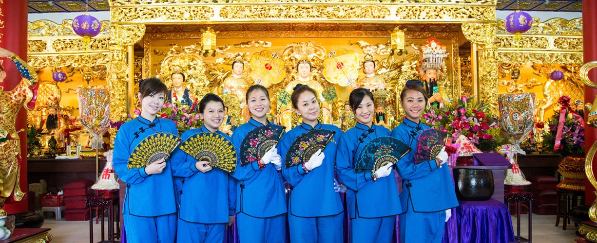
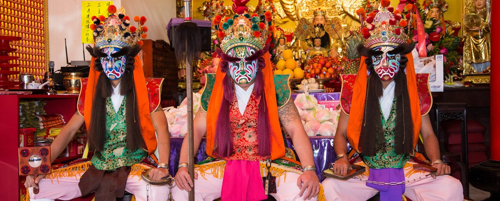
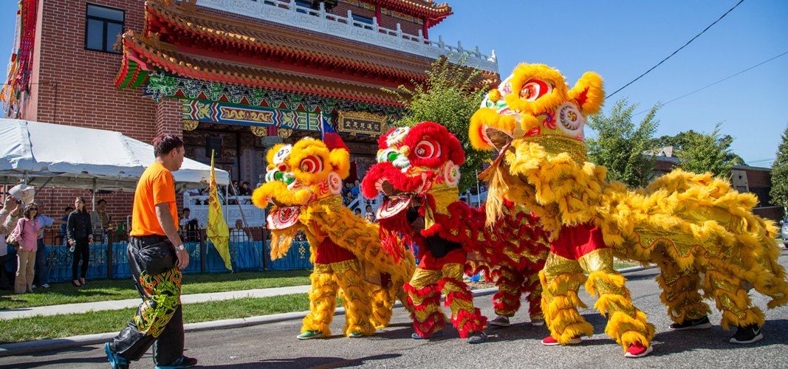

活動剪影Gallery
- 文化節記者會之一Cultural Festival press conference (1)
- 2015紐約臺灣文化節民俗演出2015 NY Taiwanese Cultural Festival folk performance
- 2015紐約臺灣文化節演出2015 NY Taiwanese Cultural Festival performance
- 母娘出巡歌曲由名歌手彭莉演唱Procession song performed by singer Peng Li
- 母娘文化季系列之一Mu Niang Cultural Season (1)
- 皇后藝術館表演Performance at the Queens Museum
- 應印度廟邀請表演於皇后藝術館內Performance at the Queens Museum at the invitation of a Hindu temple
- 大年初四舞獅拜年Lion dance on the 4th day of Lunar New Year
- 舞蹈團新春表演前排舞Dance troupe rehearsing for the New Year performance
- 慈惠堂母娘聖誕-文化節 美女群練舞中Golden Mother's Birthday Cultural Festival — dancers rehearsing



